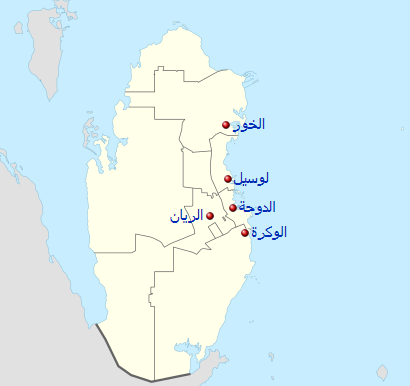

المدن و الملاعب المستضيفة

تم الإفصاح عن الملاعب الخمس الجدد، وهي ملعب الخور وملعب الشمال وملعب الوكرة وملعب الغرافة وملعب أحمد بن علي. سيضم الاستاد تقنية التبريد لتخفيض درجة الحرارة في الملاعب إلى 20 درجة. وقد أعلنت اللجنة المنظمة للملف القطري بأنه بعد انتهاء البطولة
سيتم فك الأدوار العلوية والتبرع بها لدول أخرى فقيرة، حيث أن تعداد سكان قطر أصغر بكثير من الحاجة الاستيعابية للملاعب. تم تصميم الخمس ملاعب الجديدة من قبل الألماني ألبرت سبير وشركاه.
البنية التحتية
المطارات تم تجهيز مطار حمد الدولي لمدينة الدوحة حيث إن مساحته 12 ضعفا من المطار الحالي ، وقد تم افتتاحه في عام 2014، والذي سيستمر توسيعه ليصبح واحدا من أكبر المطارات ليخدم طيران القطرية وغيرها من شركات الطيران، ومدرج الطائرات يعتبر الأكبر في الشرق الأوسط،
تم افتتاحه في 27 من مايو عام 2014. السكك الحديدية تقوم شركه الرّيل القطريه وشركه دوتش بان الألمانية بتعاون على بناء سكك حديديه في قطر حيث تكون أفضل سكك في العالم وتتكون هذه المشاريع من ثلاث أنواع مترو الدوحة: وهي سكه قطارات في أرجاء مدينه
الدوحة علما بان السكك ستكون تحت الأرض لكي لا تزدحم المدينة وتتكون هذه الشبكة التحت أرضيته من 145 محطه واربع خطوط وتعتبر هذه الشبكة الأهم. قطار المسافات الطويلة: هذه القطارات سريعه حيث سرعتها تصل إلى 220 كم/س ،تصل العاصمة القطريه بالمدن المجاورة
وتواصل مسيرها إلى المملكة العربية السعودية ومملكة البحرين الناقل الخفيف: هي شبكه خفيفه شبيهه بالترام وهي مخططه لتخدم مدينه لوسيل الحديثة وجزء من اللؤلؤه ، وغيرها شبكه في المدينة التعليمية (قطر فاونديشن) ومشروع مشيرب أيضاً.